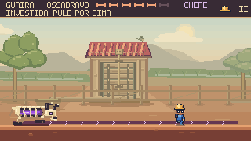
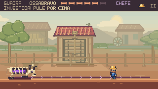

Do bairro à última arena.
Revisão dos fundos nas oito cenas de Guaíra: entradas, trechos ampliados, desvios, interiores e combates. Fachadas com o mesmo acabamento, margens que terminam de forma natural e cenários que acompanham a câmera sem perder seus encaixes.
Ossabravo · Um curral ligado ao campo


Um paiol e um pequeno moinho dão contexto ao curral. A roda gira devagar no canal, atrás das cercas; estruturas e movimento ficam afastados da faixa de combate e dos projéteis.
Vídeos extraídos de partidas concluídas, com comandos de jogo e física a 60 Hz. Captura a 30 fps, sem áudio. As comparações usam o mesmo quadro; os percursos completos também estão nas pranchas abaixo.


Acabamento que atravessa o capítulo
Casas da mesma cidade
As construções das entradas receberam telhas, beirais, calhas contínuas, abraçadeiras e embasamentos de pedra. O acabamento acompanha o das oficinas e armazéns dos percursos ampliados.
Margens com término visível
O último arrozal do Pátio termina antes da emenda do cenário. Nos Respiros, o aterro desce em talude até a margem, eliminando a borda vertical que aparecia ao chegar à oficina.
Interiores contínuos
Galeria e Câmara de Alívio compartilham paredes, frisos e fundações entre a entrada e a extensão. Esses elementos pertencem ao cenário e acompanham a câmera nas subidas e descidas.
Arenas integradas
O curral ganhou construções rurais e um canal de serviço. Na praça do Prefeito, os postes do varal chegam à alvenaria; a corrente pluvial se liga ao telhado e à base. Os fundos mantêm cores suaves durante os ataques.
Oito cenas, uma revisão contínua
386 enquadramentos em 26 pranchas registram a progressão real da câmera. A inspeção inclui os pontos regulares da partida e novas vistas ao entrar em outra região da tela.
| Cena | Trechos conferidos | Vistas |
|---|---|---|
| Travessia | Casas iniciais, vala, eclusa, armazém e saída | 47 |
| Pátio | Comportas, arrozal, emenda, passadiço e docas | 56 |
| Respiros | Bombas, talude, grelhas, oficina suspensa e cais | 47 |
| Subida | Bairro, casa elevada, guinchos, portaria e aqueduto | 60 |
| Galeria | Entrada, poços, viga alta, alçapão e desvio inferior | 53 |
| Câmara de Alívio | Oficina, sacadas, retorno, coletor e contrapressão | 43 |
| Ossabravo | Curral durante investidas, arcos de projéteis e vitória | 16 |
| Prefeito | Praça, câmera vertical, passarela, ataques e água liberada | 64 |


Verificação
As oito partidas de comparação terminaram sem dano, mantendo câmera e posições amostradas, moedas e duração da referência. A campanha normal percorreu o mapa e as oito cenas em nove execuções com gamepad simulado.
3.747 testes TypeScript aprovados, zero falhas e um caso opcional ignorado; três testes JavaScript, validadores e build aprovados. Treze novos casos conferem encaixes, continuidade, limites da decoração e pausa. Quarenta estudos no navegador verificaram desenho sem mutação, repetibilidade e movimento reduzido.
Decisões e reprodução · Resultados consolidados · Rodada anterior: fachadas e passarelas